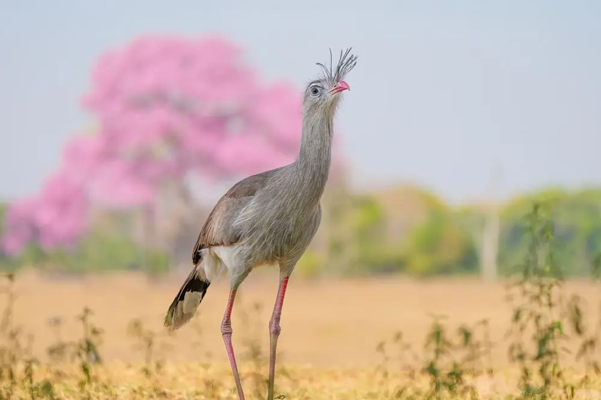

Llop de crinera
Chrysocyon brachyurus
El cànid més gran de l’Amèrica del Sud. Caça de nit i també menja molta fruita, com la fruita del llop, i n’escampa les llavors.
Vulnerable (ICMBio)
Fotografies d’animals del segon bioma més gran del Brasil, per acostar les persones a la natura i ajudar a protegir-la.
Veure la galeriaAlguns dels animals que més apareixen a les nostres expedicions.
Chrysocyon brachyurus
El cànid més gran de l’Amèrica del Sud. Caça de nit i també menja molta fruita, com la fruita del llop, i n’escampa les llavors.
Vulnerable (ICMBio)
Myrmecophaga tridactyla
Fa servir la llengua llarga, de fins a 60 cm, per menjar formigues i tèrmits. No té dents.
Vulnerable (ICMBio)
Ara ararauna
Viu en parella i fa el niu en forats de palmeres mortes, com el buriti.
És la sabana amb més espècies del món i, alhora, un dels biomes que més vegetació autòctona ha perdut al Brasil.
Sortides en grups petits, amb guia local i pensades per observar sense molestar els animals.
Coneix les expedicions